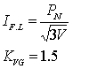

| Protection |
Digital Differential Relay for Transformer
7UT512
Siemens
Issued to: Networks
Using Single Phase Over Current test set
|
|
|
|||
| Equipment: Digital Differential Relay for Transformer 7UT512 Siemens |
Document No.: DfR-003-r0 | |||
|
Issued to: Networks |
||||
| Status: APPROVED | ||||
| Procedure: Using Single Phase Over Current test set |
Approved Date: 05 Feb 2001 | |||
| Date to be Reviewed: Feb 2006 | ||||
Introduction
This procedure details the steps required to completely check the proper operation and calibration of the digital differential 7UT512 relay. It is recommended this procedure be carried out on a yearly bases.
The document is formatted the way to minimize the possibility of error causing personal injury or damage to equipment.
Safety Precautions
A work permit must be issued and the qualified maintenance staff should carry the suitable safety category,
Safety fence (rope) with caution marks surrounding the work area,
Tools and Equipment
Secondary Injection.
Work to be Carried Out
Check that ON – OFF slide switch for power supply at the front plate of relay at ON position ( O ) and the green LED light
Note that:
For high voltage

For low voltage: KVG = 1.5 for even vector group, KVG = 1.73 for odd vector group
The pick –up current must be:
Note that the reset value equal 0.5 pick –up value.
{kind=link}
{kind=link}
{kind=link}
{kind=link}
{kind=link}